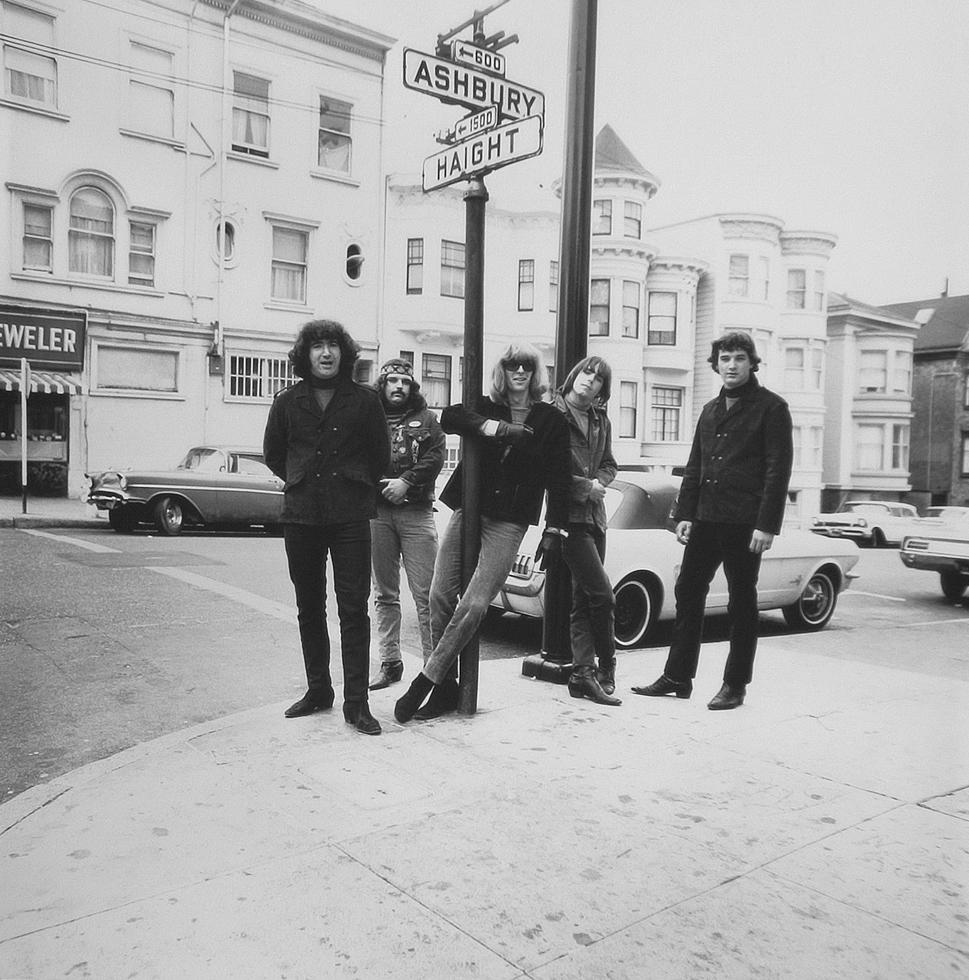
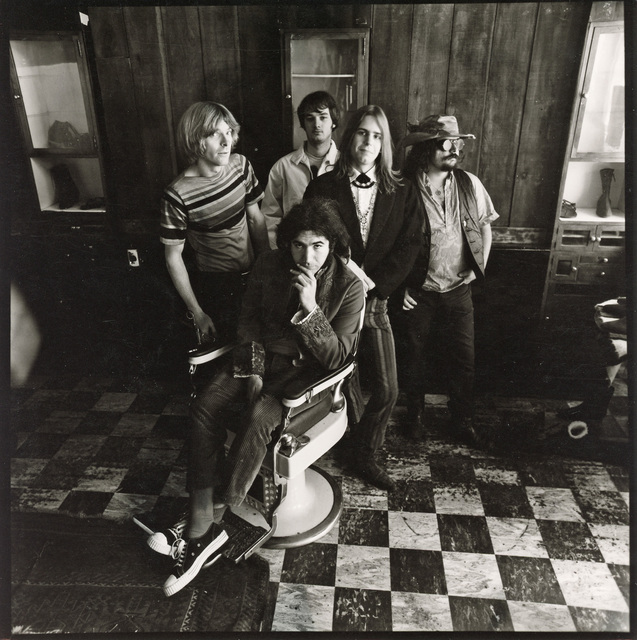

SCARLET BEGONIAS
& A TOUCH OF THE BLUES
 TAKE A TRIP
TAKE A TRIP
[THE SKY WAS YELLOW & THE SUN WAS BLUE]
I DON'T WANT TO SAY IT WAS THE ROSES....
BUT, "IT MUST HAVE BEEN THE ROSES"

JERRY GARCIA & BOB WEIR, SAN FRANCISCO 1989
Annie laid her head down in the roses. She had ribbons, ribbons, ribbons in her long brown hair. I don't know, maybe it was the roses. All I know, I could not leave her there. I don't know, it must have been the roses. The roses or the ribbons in her long brown hair. I don't know, maybe it was the roses. All I know, I could not leave her there. Ten years the waves rolled the ships home from the sea. Thinking well how it may blow in all good company. If I tell another what your own lips told to me. Let me lay 'neath the roses and my eyes no longer see. One pane of glass in the window. No one is complaining, though, come in and shut the door. Faded is the crimson from the ribbons that she wore. And it's strange how no one comes round any more....
 CONTINUE
READING
CONTINUE
READING "ANOTHER BLACK & WHITE PHOTO OF THE DEAD?"
....YOU ASK

YUP, YOU GOT THAT RIGHT!
Anyways heres the lyrics to, "Friend of the Devil"... I lit up from Reno. I was trailed by twenty hounds. Didn't get to sleep that night Till the morning came around Set out running but I'll take my time A friend of the Devil is a friend of mine If I get home before daylight I just might get some sleep tonight I ran into the Devil, babe He loaned me twenty bills I spent that night in Utah In a cave up in the hills. I set out running but I take my time A friend of the devil is a friend of mine If I get home before daylight I just might get some sleep tonight. I ran down to the levee But the Devil caught me there He took my twenty dollar bill And he vanished in the air. I set out running but I take my time. A friend of the Devil is a friend of mine. If I get home before daylight.....
CONTINUE
READING
HEAD TO SHAKEDOWN ST
Nothin' shakin' on shakedown street, used to be the heart of town Don't tell me this town ain't got no heart, you just gotta poke around
HEAD TO SHAKEDOWN ST
Nothin' shakin' on shakedown street, used to be the heart of town Don't tell me this town ain't got no heart, you just gotta poke around
HEAD TO SHAKEDOWN ST
Nothin' shakin' on shakedown street, used to be the heart of town Don't tell me this town ain't got no heart, you just gotta poke around
 Calling out around the world Are you ready for a brand new beat? Summer's here and the time is right for dancing in the street They're dancing in Chicago Down in New Orleans New York City All we need is music, sweet music There'll be music everywhere It doesn't matter what you wear Just as long as you are there Come on, every guy grab a girl Everywhere around the world
LEARN
MORE Calling out around the world Are you ready for a brand new beat? Summer's here and the time is right for dancing in the street They're dancing in Chicago Down in New Orleans New York City All we need is music, sweet music There'll be music everywhere It doesn't matter what you wear Just as long as you are there Come on, every guy grab a girl Everywhere around the world
LEARN
MORE